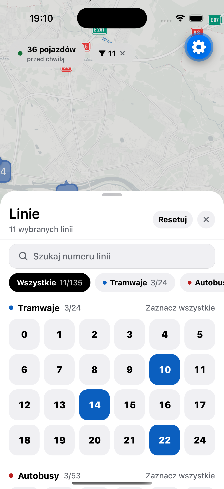
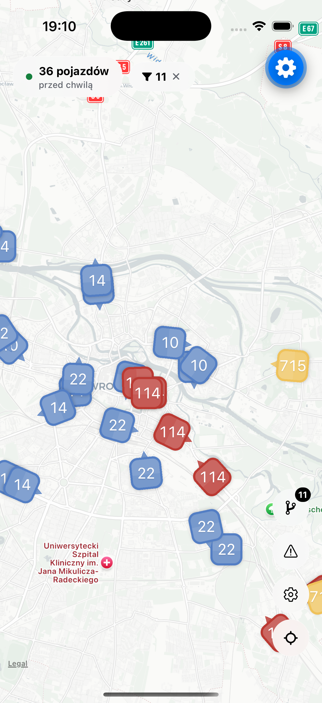
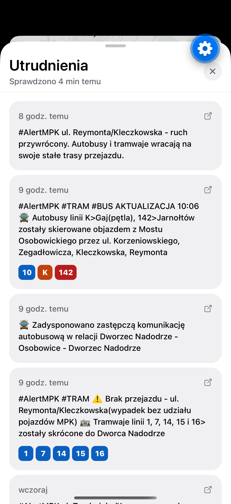

Podgląd
Aplikacja
Każdy pojazd z trasą, kierunkiem jazdy, najbliższymi przystankami i opóźnieniem — na mapie stworzonej do używania na przystanku.


NA ŻYWO
Funkcje
Do czego służy
Zbudowany, żeby odpowiadać na jedno pytanie, które masz na przystanku: czy mój tramwaj już jedzie i kiedy przyjedzie?
Śledzenie na żywo
Pozycje pojazdów aktualizowane co 10 sekund. Tramwaje i autobusy poruszają się na mapie — bez ręcznego odświeżania.
Wszystkie linie
Tramwaje, autobusy dzienne i nocne, podmiejskie, pospieszne i specjalne.
Trasy linii
Pełne trasy na interaktywnej mapie, z każdym przystankiem po drodze i kursem, którym jedzie pojazd.
Komunikaty o utrudnieniach
Opóźnienia, awarie i zmiany w rozkładach dla linii, które obserwujesz — prosto z miejskich komunikatów.
Najbliższe odjazdy
Dotknij przystanku na trasie i zobacz najbliższe odjazdy oraz faktyczne opóźnienie pojazdu.
Dla ulicy
Telefon na pierwszym miejscu: mapa wypełnia ekran, a wszystko inne trzyma wysuwany panel.
Dane
Skąd pochodzą dane
Tylko publiczne otwarte dane, czytane w czasie działania — bez zaszytych na stałe adresów, które psują się, gdy miasto coś zmienia.
-
aktywne
Rozkłady i trasy
Miejskie archiwum GTFS, wykrywane w czasie działania i wybierane według daty obowiązywania, żeby przyszły rozkład nigdy nie pokazywał się jako aktualny.
-
aktywne
Pozycje na żywo
Publiczny punkt końcowy MPK
bus_position, odpytywany co 10 sekund i dopasowywany do właściwej trasy i kierunku. -
aktywne
Komunikaty
Komunikaty ze stron miasta i @AlertMPK, filtrowane tak, żeby nagłówek stał się alertem tylko wtedy, gdy faktycznie coś się dzieje.